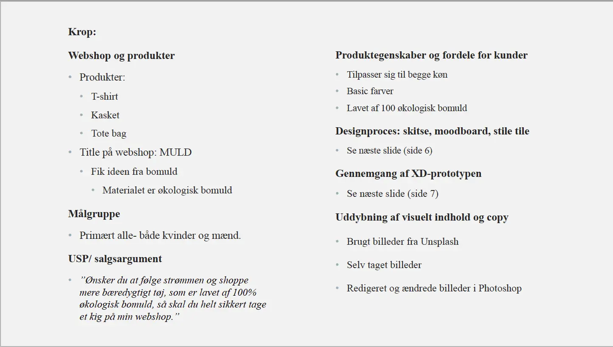

Tema 3 - Grundlæggende UX
03.02.02 Løsning
I denne opgave skulle jeg lave et design af min egen prototype ud fra en grundlæggende idé til et shop-koncept på nettet. Mit shop-koncept var et bæredygtigt koncept, hvor tøjet kun var produceret af 100& økologisk bomuld. Til at lave min egen prototype benyttede jeg mig af programmet Adobe XD med hjælp af UI kits.
03.03.02 Pitch
Denne opgave bestod af at jeg skulle lave en UX pitch. Pitchen skulle være en 5 minutters præsentation. Præsentationen skulle være en præsentation om mine UX-leverancer. Udover det også min endelige løsning og små delopgaver som jeg også har lavet- eksempelvis UX-research, hvor jeg brugte forskellige research metoder.
